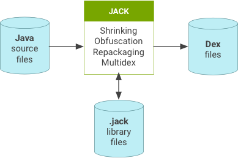
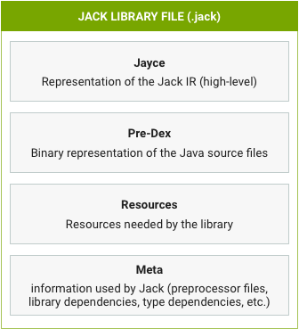
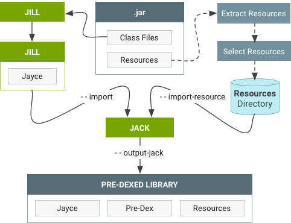
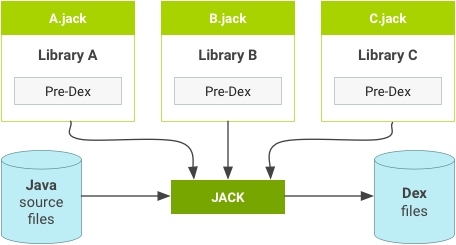

Jack is an Android toolchain that compiles Java source into Android dex bytecode. It replaces the previous Android toolchain that consisted of multiple tools such as javac, ProGuard, jarjar, and dx. As Jack is the default Android build toolchain for Android 6.x, you don’t have to do anything differently to use Jack—just use your standard makefile commands to compile the tree or your project.
The Jack toolchain provides the following advantages:
As of Android 7.0, Jack supports code coverage with JaCoCo. For details, refer to Code Coverage with JaCoCo and Java 8 Language Features.
Jack has its own .jack file format that contains the pre-compiled dex code for the library, allowing for faster compilation (pre-dex).
The Jill tool translates the existing .jar libraries into the new library format, as shown below.
The first time Jack is used, it launches a local Jack compilation server on your computer. This server:
The Jack server shuts itself down after an idle time without any compilation.
It uses two TCP ports on the localhost interface and is not available
externally. All parameters (number of parallel compilations, timeout, ports
number, etc.) can be modified by editing the $HOME/.jack file.
The $HOME/.jack file contains the following settings for Jack
server variables in a full bash syntax:
SERVER=true. Enable the server feature of Jack.SERVER_PORT_SERVICE=8072. Set the TCP port number of the server
for compilation purposes.SERVER_PORT_ADMIN=8073. Set the TCP port number of the server
for admin purposes.SERVER_COUNT=1. Unused.
SERVER_NB_COMPILE=4. Set the maximum number of allowed parallel
compilations.SERVER_TIMEOUT=60. Set the number of idle seconds the server
must wait without any compilation before shutting itself down.SERVER_LOG=${SERVER_LOG:=$SERVER_DIR/jack-$SERVER_PORT_SERVICE.log}.
Set the file where server logs are written. By default, this variable can be
overloaded by an environment variable.JACK_VM_COMMAND=${JACK_VM_COMMAND:=java}. Set the default
command used to launch a JVM on the host. By default, this variable can be
overloaded by environment variable.| Problem | Action |
|---|---|
| Your computer becomes unresponsive during compilation or you experience Jack compilations failing on “Out of memory error” | You can improve the situation by reducing the number of simultaneous Jack
compilations by editing $HOME/.jack and changing
SERVER_NB_COMPILE to a lower value. |
| Compilations are failing on “Cannot launch background server” | The most likely cause is TCP ports are already used on your computer. Change
ports by editing $HOME/.jack (SERVER_PORT_SERVICE and
SERVER_PORT_ADMIN variables).
If it doesn’t solve the problem, report the error (be sure to attach your compilation log and the Jack server log). To unblock the situation, disable the Jack compilation server by editing $HOME/.jack and changing SERVER to false.
Unfortunately this will significantly slow down your compilation and may force
you to launch make -j with load control (option -l
of make).
|
| Compilation gets stuck without any progress | Report and provide the following information when possible:
jack-admin kill-server) then remove the temporary directories
contained in jack-$USER of your temporary directory
(/tmp or $TMPDIR).
|
| Other issues | To report bugs or request features, use the public issue tracker at http://b.android.com. Use the Jack tool bug report or Jack tool feature request templates and remember to attach the Jack log to the bug report. |
make command with a dist target, the Jack log is
located at $ANDROID_BUILD_TOP/out/dist/logs/jack-server.log.
Otherwise, you can find the log by running jack-admin server-log.
In case of reproducible Jack failures, you can get a more detailed log by
setting the following variable:
export ANDROID_JACK_EXTRA_ARGS="--verbose debug --sanity-checks on -D sched.runner=single-threaded"
Use standard makefile commands to compile the tree (or your project) and attach standard output and error. To remove detailed build logs, run:
unset ANDROID_JACK_EXTRA_ARGS
SERVER_NB_COMPILE accordingly. You can also disable
the Jack server by setting SERVER=false in
$HOME/.jack.vm-tests-tf integration.
Jack supports Java programming language 1.7 and integrates the additional features described below.
When generating a Jack library file, the .dex of the library is generated and stored inside the .jack library file as a pre-dex. When compiling, Jack reuses the pre-dex from each library. All libraries are pre-dexed:
Jack does not reuse the library pre-dex if shrinking, obfuscation, or repackaging is used in the compilation.
Incremental compilation means that only the components touched since the last compilation (and their dependencies) are recompiled. Incremental compilation can be significantly faster than a full compilation when changes are limited to a set of components.
Incremental compilation is not enabled by default (and is automatically
deactivated when shrinking, obfuscation, repackaging or multi-dex legacy is
enabled). To enable incremental builds, add the following line to the
Android.mk file of the project you want to build incrementally:
LOCAL_JACK_ENABLED := incremental
Jack uses proguard configuration files to enable shrinking and obfuscation.
Common options include the following:
@
-include
-basedirectory
-injars
-outjars // only 1 output jar supported
-libraryjars
-keep
-keepclassmembers
-keepclasseswithmembers
-keepnames
-keepclassmembernames
-keepclasseswithmembernames
-printseeds
Shrinking options include the following:
-dontshrink
Obfuscation options include the following:
-dontobfuscate
-printmapping
-applymapping
-obfuscationdictionary
-classobfuscationdictionary
-packageobfuscationdictionary
-useuniqueclassmembernames
-dontusemixedcaseclassnames
-keeppackagenames
-flattenpackagehierarchy
-repackageclasses
-keepattributes
-adaptclassstrings
Ignored options include the following:
-dontoptimize // Jack does not optimize
-dontpreverify // Jack does not preverify
-skipnonpubliclibraryclasses
-dontskipnonpubliclibraryclasses
-dontskipnonpubliclibraryclassmembers
-keepdirectories
-target
-forceprocessing
-printusage
-whyareyoukeeping
-optimizations
-optimizationpasses
-assumenosideeffects
-allowaccessmodification
-mergeinterfacesaggressively
-overloadaggressively
-microedition
-verbose
-dontnote
-dontwarn
-ignorewarnings
-printconfiguration
-dump
Jack uses jarjar configuration files to do repackaging. While Jack is compatible with "rule" rule types, it is not compatible with "zap" or "keep" rule types. If you need "zap" or "keep" rule types, file a feature request with a description of how you use the feature in your app.
Jack offers native and legacy multidex support. Since dex files are limited to 65K methods, apps with over 65K methods must be split into multiple dex files. For more details, refer to Building Apps with Over 65K Methods.